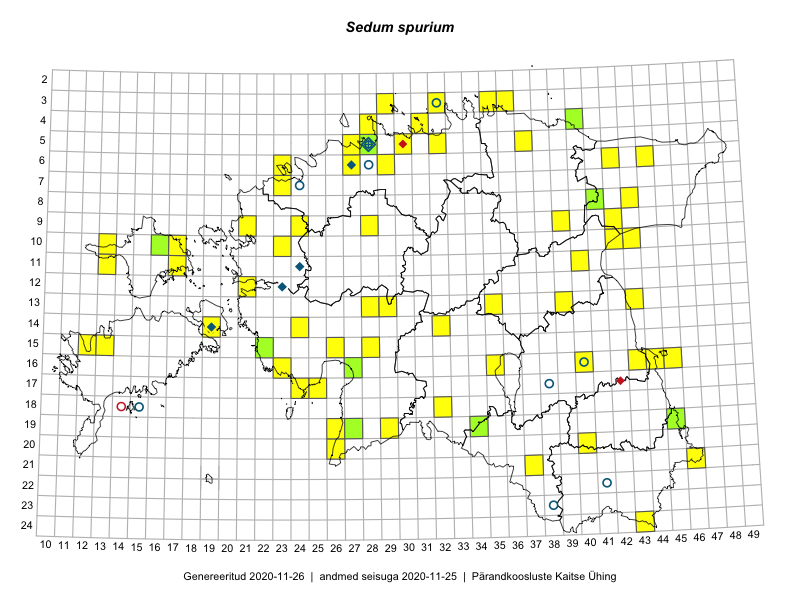

Sedum spurium
Uuendatud: 2016-12-08
Kaardile koondatud taksonid: Sedum spurium M.Bieb.

Kaart põhineb 81 vaatlusel. Taime on leitud 52 ruudust.
| Ruut | Vaatleja(d) | Vaatlusaeg | Kirje tüüp | Viide andmebaasikirjele |
|---|---|---|---|---|
| 08-43 | Meeli Mesipuu, Liina Oja | 2015-04-27 | punkt | vaata PlutoFis |
| 10-42 | Peedu Saar | 2015-05-14 | ruut/ala | vaata PlutoFis |
| 10-42 | Peedu Saar | 2015-05-14 | punkt | vaata PlutoFis |
| 19-29 | Peedu Saar, Liina Oja | 2015-05-22 | ruut/ala | vaata PlutoFis |
| 05-32 | Rein Kalamees | 2015-06-05 | ruut/ala | vaata PlutoFis |
| 16-23 | Peedu Saar, Liina Oja | 2015-05-15 | ruut/ala | vaata PlutoFis |
| 16-23 | Peedu Saar, Liina Oja | 2015-05-21 | punkt | vaata PlutoFis |
| 11-17 | Peedu Saar, Toomas Kukk | 2015-05-28 | ruut/ala | vaata PlutoFis |
| 10-17 | Toomas Kukk, Eerik Leibak | 2015-08-12 | ruut/ala | vaata PlutoFis |
| 10-17 | Toomas Kukk, Eerik Leibak | 2015-08-12 | punkt | vaata PlutoFis |
| 06-44 | Peedu Saar, Liina Oja | 2015-07-21 | punkt | vaata PlutoFis |
| 06-44 | Peedu Saar, Liina Oja | 2015-07-21 | punkt | vaata PlutoFis |
| 11-40 | Toomas Kukk, Raivo Kalle | 2015-05-12 | punkt | vaata PlutoFis |
| 21-46 | Rein Kalamees, Kersti Püssa | 2015-05-28 | ruut/ala | vaata PlutoFis |
| 16-43 | Toomas Kukk, Eerik Leibak | 2015-05-03 | ruut/ala | vaata PlutoFis |
| 16-43 | Toomas Kukk, Eerik Leibak | 2015-05-03 | punkt | vaata PlutoFis |
| 06-42 | Toomas Kukk, Eerik Leibak | 2015-04-27 | punkt | vaata PlutoFis |
| 24-43 | Ott Luuk, Peedu Saar | 2015-08-13 | punkt | vaata PlutoFis |
| 16-45 | Toomas Kukk, Eerik Leibak | 2015-07-29 | ruut/ala | vaata PlutoFis |
| 06-44 | Peedu Saar, Liina Oja | 2015-07-21 | ruut/ala | vaata PlutoFis |
| 16-45 | Toomas Kukk, Eerik Leibak | 2015-07-29 | punkt | vaata PlutoFis |
| 16-44 | Toomas Kukk, Eerik Leibak | 2015-07-29 | ruut/ala | vaata PlutoFis |
| 16-44 | Toomas Kukk, Eerik Leibak | 2015-07-29 | punkt | vaata PlutoFis |
| 05-30 | Rein Kalamees, Kersti Püssa | 2015-05-27 | ruut/ala | vaata PlutoFis |
| 11-17 | Toomas Kukk, Peedu Saar | 2015-05-28 | punkt | vaata PlutoFis |
| 03-35 | Rein Kalamees, Kersti Püssa | 2015-05-31 | ruut/ala | vaata PlutoFis |
| 03-36 | Rein Kalamees, Kersti Püssa | 2015-05-31 | ruut/ala | vaata PlutoFis |
| 03-32 | Rein Kalamees, Kersti Püssa | 2015-05-15 | ruut/ala | vaata PlutoFis |
| 04-31 | Rein Kalamees, Kersti Püssa | 2015-06-12 | ruut/ala | vaata PlutoFis |
| 19-45 | Toomas Kukk, Kersti Tambets, Janika Sammasto, Timo Luhamäe, Sten Mander | 2014-07-29 | punkt | vaata PlutoFis |
| 17-24 | Ott Luuk, Eerik Leibak | 2015-05-21 | ruut/ala | vaata PlutoFis |
| 17-24 | Ott Luuk, Eerik Leibak | 2015-05-21 | punkt | vaata PlutoFis |
| 17-24 | Ott Luuk, Eerik Leibak | 2015-05-21 | punkt | vaata PlutoFis |
| 17-24 | Ott Luuk, Eerik Leibak | 2015-05-21 | punkt | vaata PlutoFis |
| 09-42 | Timo Luhamäe, Liina Oja | 2015-05-14 | ruut/ala | vaata PlutoFis |
| 09-42 | Timo Luhamäe, Liina Oja | 2015-05-14 | punkt | vaata PlutoFis |
| 08-41 | Timo Luhamäe, Liina Oja | 2015-05-14 | ruut/ala | vaata PlutoFis |
| 13-28 | Liina Oja, Ott Luuk | 2015-05-09 | punkt | vaata PlutoFis |
| 13-29 | Liina Oja, Ott Luuk | 2015-05-09 | punkt | vaata PlutoFis |
| 06-44 | Liina Oja, Meeli Mesipuu | 2015-04-25 | ruut/ala | vaata PlutoFis |
| 07-23 | Mari Metsoja, Jaak-Albert Metsoja | 2015-05-16 | ruut/ala | vaata PlutoFis |
| 08-41 | Timo Luhamäe, Liina Oja | 2015-05-14 | punkt | vaata PlutoFis |
| 06-23 | Mari Metsoja, Jaak-Albert Metsoja, Ott Luuk | 2015-06-04 | ruut/ala | vaata PlutoFis |
| 13-35 | Ott Luuk, Liina Oja | 2015-05-11 | punkt | vaata PlutoFis |
| 09-28 | Aat Sarv | 2015-05-02 | ruut/ala | vaata PlutoFis |
| 06-44 | Meeli Mesipuu, Liina Oja | 2015-04-25 | punkt | vaata PlutoFis |
| 20-40 | Toomas Kukk, Eerik Leibak | 2016-04-25 | ruut/ala | vaata PlutoFis |
| 20-40 | Toomas Kukk, Eerik Leibak | 2016-04-25 | punkt | vaata PlutoFis |
| 15-28 | Ott Luuk, Tiit Hallikma | 2016-04-28 | ruut/ala | vaata PlutoFis |
| 20-26 | Indrek Tammekänd | 2016-05-10 | punkt | vaata PlutoFis |
| 14-24 | Toomas Kukk, Indrek Tammekänd | 2016-04-29 | punkt | vaata PlutoFis |
| 10-13 | Toomas Kukk, Peedu Saar | 2016-05-07 | ruut/ala | vaata PlutoFis |
| 11-13 | Toomas Kukk, Peedu Saar | 2016-05-07 | ruut/ala | vaata PlutoFis |
| 11-13 | Toomas Kukk, Peedu Saar | 2016-05-07 | punkt | vaata PlutoFis |
| 10-13 | Peedu Saar, Toomas Kukk | 2016-05-07 | punkt | vaata PlutoFis |
| 15-22 | Toomas Kukk, Peedu Saar | 2016-05-14 | punkt | vaata PlutoFis |
| 21-37 | Tiit Hallikma, Ott Luuk | 2016-04-27 | punkt | vaata PlutoFis |
| 15-28 | Tiit Hallikma, Ott Luuk | 2016-04-28 | punkt | vaata PlutoFis |
| 09-24 | Tiit Hallikma, Ott Luuk | 2016-05-13 | punkt | vaata PlutoFis |
| 06-27 | Toomas Kukk | 2016-06-06 | punkt | vaata PlutoFis |
| 19-34 | Silvia Pihu, Illi Tarmu | 2015-07-11 | punkt | vaata PlutoFis |
| 19-34 | Silvia Pihu, Illi Tarmu | 2015-07-11 | punkt | vaata PlutoFis |
| 12-21 | Liina Oja, Rein Kalamees | 2016-07-05 | punkt | vaata PlutoFis |
| 14-32 | Toomas Kukk, Liina Oja | 2016-07-21 | ruut/ala | vaata PlutoFis |
| 05-37 | Tõnu Ploompuu, Eerik Leibak | 2016-07-27 | ruut/ala | vaata PlutoFis |
| 05-37 | Tõnu Ploompuu, Eerik Leibak | 2016-07-27 | punkt | vaata PlutoFis |
| 09-39 | Ott Luuk, Eerik Leibak | 2016-08-09 | ruut/ala | vaata PlutoFis |
| 04-28 | Sander Laherand, Tõnu Ploompuu, Nele Jõessar | 2016-07-25 | punkt | vaata PlutoFis |
| 06-29 | Toomas Kukk, Sander Laherand | 2016-08-29 | punkt | vaata PlutoFis |
| 06-29 | Toomas Kukk, Sander Laherand | 2016-08-29 | punkt | vaata PlutoFis |
| 04-28 | Sander Laherand, Tõnu Ploompuu, Nele Jõessar | 2016-07-25 | ruut/ala | vaata PlutoFis |
| 14-32 | Liina Oja, Toomas Kukk | 2016-07-21 | punkt | vaata PlutoFis |
| 05-28 | Toomas Kukk, Peedu Saar | 2016-08-03 | ruut/ala | vaata PlutoFis |
| 06-29 | Sander Laherand, Toomas Kukk | 2016-08-29 | ruut/ala | vaata PlutoFis |
| 19-45 | Tiit Hallikma, Toomas Kukk | 2016-06-17 | punkt | vaata PlutoFis |
| 17-25 | Tiit Hallikma, Tõnu Ploompuu | 2016-07-06 | ruut/ala | vaata PlutoFis |
| 15-13 | Toomas Kukk, Meeli Mesipuu, Mari Reitalu | 2016-10-06 | punkt | vaata PlutoFis |
| 17-25 | Tiit Hallikma, Tõnu Ploompuu | 2016-07-06 | punkt | vaata PlutoFis |
| 10-43 | Hannes Pehlak, Ott Luuk | 2016-07-29 | ruut/ala | vaata PlutoFis |
| 16-35 | Jaak-Albert Metsoja, Lena Neuenkamp, Sirje Azarov | 2016-07-20 | ruut/ala | vaata PlutoFis |
| 06-23 | Jaak-Albert Metsoja, Mari Metsoja, Ott Luuk | 2015-06-04 | punkt | vaata PlutoFis |